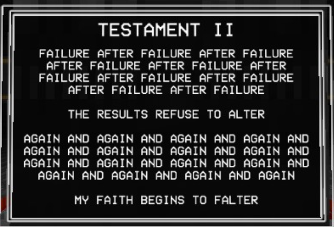
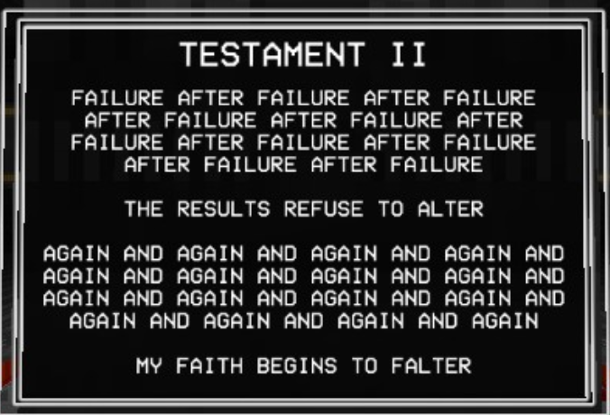
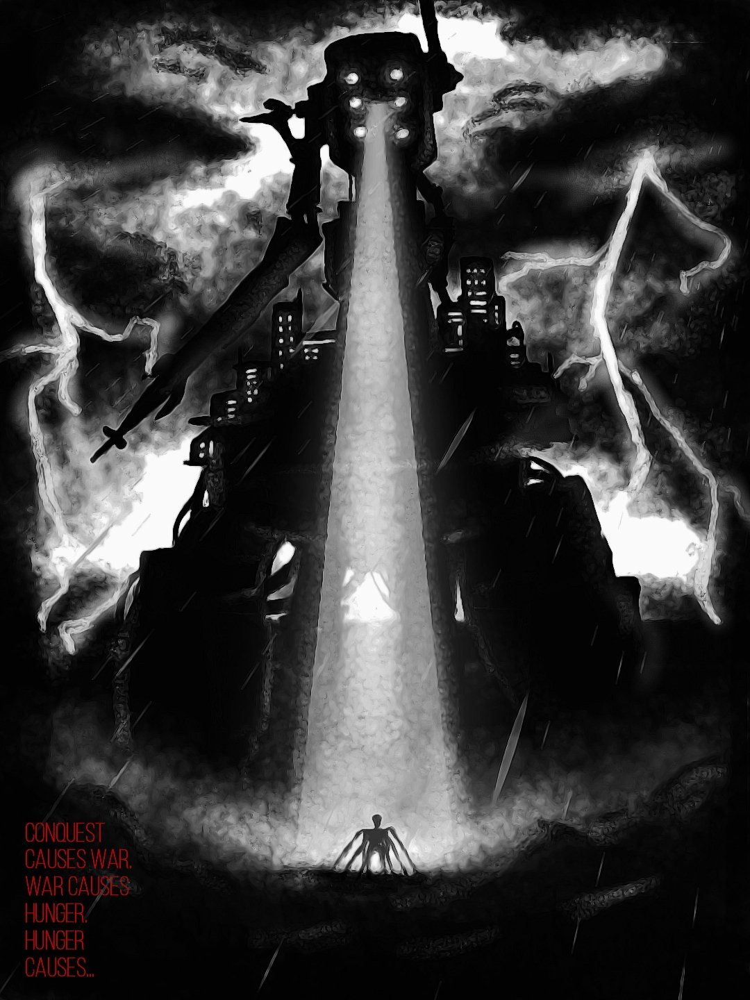

ULTRAKILL's lore is what ties the game's story, environments and gameplay together, creating a world around what the player experiences throughout the game. Not much is known for sure, and the order of which things happen is not clear..
ULTRAKILL's lore is what ties the game's story, environments and gameplay together, creating a world around what the player experiences throughout the game. Not much is known for sure, and the order of which things happen is not clear..
ULTRAKILL's story opens with three sentances.
The game follows this core phrase to a tee througout the entire game. The protaganist, a robot named V1, enters hell to find more fuel. V1 was created by a war torn humanity, one so hell bent on fighting that they created a contraption to run purely on the blood of it's enemies. Well at some point humanity finally achived it's goal. The world was empty, and humanity was dead.
V1, the emotionless robotic killer now has to enter hell to fufil it's one and only purpose.
Act one of ULTRAKILL is packed through with violence and gore, but if you look closer you may see bits of lore beginning to poke out. Throughout all of act 1 we see many diffrent signs of lore, from enemy descriptions, scenery in levels, and even secret levels that the player must find through varius means. There's more than I can go over here, so if you would like to learn the whole story you should visit This Wiki Page for a full overview.
The quick summary though is that Hell has multiple rulers, each with diffrent ideas of how to preside over their share of the underworld. One decides to make Hell a nice place to live while another decides to wage war agianst heaven. This is where Gaberial comes in to stop the inssurection of Hell by killing the leaders. This includes the peaceful Judge of Hell, King Minos. Now Gaberial is tasked by heaven to be the new ruler of Hell, ensuring the continuous cycle of torment for sinners. We continue to progress through the game and learn more as even Gaberial after his first defeat begins to quesiton Heavon's council of angels. But what does all of that matter to us, after all the only thing we are here for... is blood.